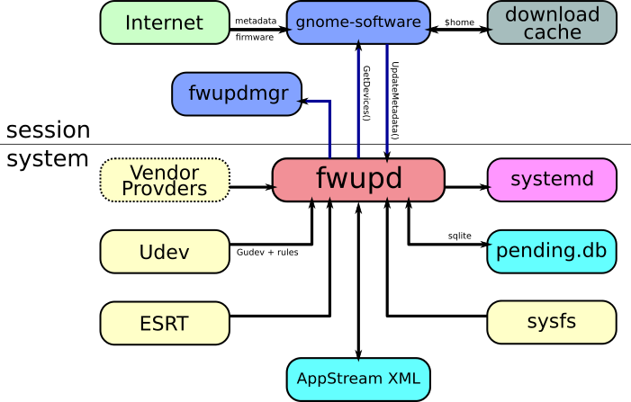

A lot of people don't have UEFI hardware that is capable of applying capsule firmware updates, so I've also added a ColorHug provider, which predictably also lets you update the firmware on your ColorHug devices.
I'm also happy to accept patches for other hardware that supports updates. The provider concept allows vendors to do pretty much anything to get the list of attached hardware, as long as a unique hardware component is in some way mapped to a GUID value. Ideally the tools would be open source, or better still not needing any external tools at all. Reading a VID/PID and then writing firmware to a chip usually isn't rocket science.
AppStream 0.9
is used as the interchange format for update descriptions.
A lot of tools already talk AppStream and so this makes working with
other desktop and server tools very easy. Actually generating the AppStream
metadata can either be done using using appstream-builder or the
Linux Vendor Firmware Service.
fwupd is implemented as a D-Bus activated service that is autostarted when required.

The 'client' which is typically gnome-software or fwupd
does all the query, download and schedule steps.
This means that the daemon has no network access and only acts as the mechanism
for clients.
The latest code is always available at GitHub and this is also the place to file bugs or feature requests. You can trivially get the code by doing:
$ git clone https://github.com/hughsie/fwupd.git
You can also install all the required dependancies using:
$ sudo dnf install docbook-utils gettext intltool libgudev1-devel \
colord-devel polkit-devel libgcab1-devel \
sqlite-devel gpgme-devel fwupdate-devel
There are currently several ways to detect the firmware version:
bcdVersion for some USB deviceslibfwupdate to get the ESRT table dataFor generic USB devices you can use a firmware vendor extensions that are used by several OpenHardware projects. This means the fwupd daemon can obtain the GUID and firmware version without claiming the interface on the device and preventing other software from using it.
To implement the firmware version extension just create an interface descriptor
with class code 0xff, subclass code 0x46 and
protocol 0x57 pointing to a string descriptor with the firmware version.
An example commit to the ColorHug project can be found
here.
Furthermore, using the firmware GUID extension allows fwupd to detect firmware updates for devices it does not know how to update. These types of devices will however show up in the command line and GUI tools, so the user is at least aware that updates are available.
To implement this, add an interface descriptor with class code 0xff, subclass
code 0x47 and protocol 0x55 pointing to a string descriptor with the GUID.
If the GUID matches the <id> obtained from the AppStream metadata then the
device will be shown.
An example commit to the ColorHug project can be found
here.
Offline updates are done using a special boot target which means that the usual graphical environment is not started. Once the firmware update has completed the system will reboot.
Devices go through the following lifecycles:
SCHEDULED → SUCCESS → deletedSCHEDULED → FAILED → deleted
Any user-visible output is available using the GetResults() D-Bus method, and
the database entry is only deleted once the ClearResults() method is called.
The results are obtained and cleared either using a provider-supplied method
or using a small SQLite database located at /var/lib/fwupd/pending.db
Installing a public key to /etc/pki/fwupd allows firmware signed with a
matching private key to be recognized as trusted, which may require less
authentication to install than for untrusted files.
By default trusted firmware can be upgraded (but not downgraded)
without the user or administrator
password.
Only very few keys will be installed by default. These are the keys of vendors who have a proven security track record and a thorough understanding of public-private key security.
In particular, private keys should only be kept on Hardware Security Mechanisms, and used on machines (or virtual machine) that have limited network access, or networking completely disabled. The machine and any backups also need to be kept physically secure.
If you think your key should be added by default and trusted by all users, please open a pull request with details about your company including items such as a daytime phone number and any relevant security policies already in place.